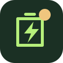

Перевірте батарею
Однакові комірки, правильна послідовність вимірювальних проводів, справні датчики температури. Перед зміною параметрів відключіть навантаження та зарядні джерела згідно з інструкціями.

JK BMS / configby RA7 · v0.1.2Від вашої конфігурації до зрозумілих налаштувань BMS та інвертора. Без зайвих розрахунків.
* Номінальна оцінка без втрат інвертора, впливу температури та старіння.
Для LiFePO₄ немає точного перерахунку SOC у напругу. Наведені робочі напруги — інженерні стартові орієнтири, а не гарантія вибраних %. У режимі User точне обмеження SOC потребує зовнішнього керування за перевіреними даними BMS.
Пороги напруги BMS та інвертора перераховуються разом. Струми, температурні захисти й калібрування SOC зберігають свої незалежні вимоги. Перед застосуванням перевірте монтаж, переріз кабелів, запобіжник і покази датчиків.
Однакові комірки, правильна послідовність вимірювальних проводів, справні датчики температури. Перед зміною параметрів відключіть навантаження та зарядні джерела згідно з інструкціями.
Внесіть ємність і кількість комірок. Перевірте напруги мультиметром. Захист температури має бути увімкнений. Дотримуйтеся обмежень EVE MB31; універсальний пресет BMS не замінює вимог виробника комірок.
Почніть з User без обміну даними. Не обирайте PYLON або інший протокол навмання. Після запуску перевірте струм, просідання напруги й фактичний SOC протягом циклу.